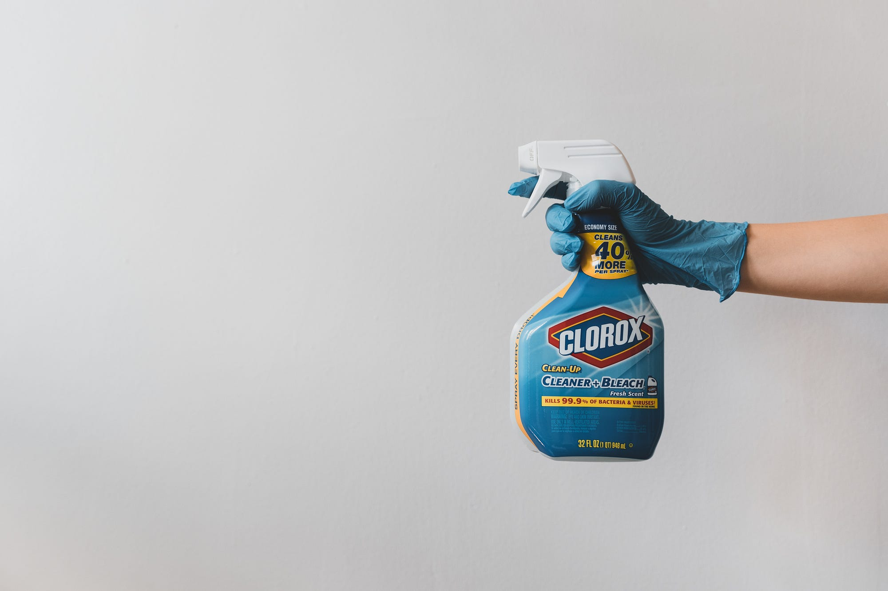

Many banks allow you to get a CSV dump of your transactions. I’ve downloaded my transaction data for this year and I will walk you through my analysis. I will only look at what I spend money on. I will not look at my income and I will not write about my savings plan/investments.
All code can be found on GitHub (link), in case you’re interested in Streamlit / Pydantic.
About me: The Data Generating Process
Photo by Ruthson Zimmerman on Unsplash
I’m Martin, an IT Consultant working in Munich (Germany). I’m 30 years old, in a long-term relationship. In my leisure time, I like bouldering (climbing), programming/data analysis, and playing board games. And blogging, of course. At the end of 2019, I decided that I will thoroughly track my spending in 2020. I wrote down every single receipt and thus tracked what I spend money on. For this article, I will only have a look at what my bank tracked. I tried to pay only digitally this year, but some things are cash-only in Germany.
I live in a shared apartment and my girlfriend visits me a lot, meaning that some of the expenses are divided by multiple people (e.g. a new dishwasher) and for others, I pay more than I would for my own (e.g. food).
One reason why I live in a shared apartment is to save money to buy a house at some point. For this reason, I try not to spend too much money on other stuff as well.
The transaction data export of my bank contains the following columns:
- Date when the transaction was executed
- Payee: Who received the money?
- Transaction Type: e.g. Direct Debit, Master Card / Maestro Payment, MoneyBeam, Income, Giro Transfer
- Payment reference: A message which helps me to understand what this is about.
- Category: My bank has a fixed set of categories such as “Leisure & Entertainment” or “Transport & Car”. It typically gets the category correct automatically, but in some cases, I adjust it.
- Amount: I live in Germany, so most of this is in EUR. If you’re interested in how much this is in another currency at the moment, try “123 EUR in USD” or similar.
Data Cleaning

Photo by Clay Banks on UnsplashI removed all non-EUR transactions (3 in total; in sum less than 30 EUR). I also removed my salary and failed transactions. Failed transactions sometimes showed up as transfers of some amount of money from my account and immediately back to my account.
I’ve removed ATM usage as it interferes with other analyses. I used ATMs 16× and withdrew a total of 1330 EUR. Out of that, I withdrew 2× 200 EUR for a present, and about 70 EUR were for business lunches where I had to pay cash. The remaining 860 EUR were probably most of the time food/groceries and a few times for leisure time activities such as private restaurant visits.
The next, harder thing was to remove the expenses I paid first and my employer reimbursed later.
Lastly, I removed all other income. This is mostly friends or family who paid back the money I had lent them. This fell into 3 categories: (1) We ordered stuff together to avoid higher shipping costs; (2) I paid for public transportation tickets/hotel room bookings with my girlfriend; (3) I bought food for my girlfriend.
Univariate Analysis
Photo by Christina Victoria Craft on Unsplash
In this section, I look at each column independently of the others. We want to get a feeling for the data.
- 510 transactions are left after cleaning.
- The 30th of April had 7 transactions and thus is the “transaction heaviest” day.
- I had 72 transactions with Lidl, 71 with Amazon, 59 with Penny, 47 with Aldi, and 33 with my flatmate.
- I paid 241× with Master Card, 92× with Maestro, 92× with Direct Debit, 50 outgoing transfers, and 32 incoming transfers.
- The highest amount I’ve paid is 419 EUR (one part of my rent). The lowest is 0.19 EUR. The median is 9.99 EUR, the mean is 27.87 EUR, the 25th percentile is 4.94 EUR, and the 75th percentile is 20.95 EUR. In other words: Most of my transactions are for a very low amount, but there are some which are way higher. Typically when I use my account, it's about 5 EUR to 21 EUR.
- 333 transactions did not have a reference.
- 208 transactions have the category “Food”, 63 have “Amazon”, 44 have “Rent/Electricity/Water”, 26 have “Household”, and 21 “Transport”.
Multivariate Analysis
Let’s have a look at multiple variables at the same time!
Top-5 Companies I gave my money to
This is only about my consumer behavior, not about my investments.
- 6160.43 EUR: My landlord + flatmates
- 1384 EUR: Amazon
- 535 EUR: Penny
- 530 EUR: Lidl
- 375 EUR: Aldi
Top-5 Most Expensive Stuff
- 127 EUR: Western Digital My Passport (5 TB)
- 116 EUR: AVM FRITZ! Box 7530
- 60 EUR: The FIFINE K670 microphone + a USB-C hub. I wanted to have better audio quality in calls. Didn’t quite work. The issue is less the mic than the analog connection.
- 32 EUR: A Schwalbe Marathon Plus bicycle tire
- 30 EUR: A USB daylight lamp with 10,000 lumens. As I’m now very often working from home, I needed it a bit brighter.
How often did I return bought stuff?
I bought something from Amazon 62 times and returned something 6 times.
What I learned looking at transactions
Most transaction data is pretty boring, but it becomes interesting when you look at income and where the bulk of the money goes. Some parts are a bit hidden. For example, when I paid with PayPal, it was pretty hard to tell what I spent the money on. It’s a similar story with Amazon or stuff that my company reimbursed.
Some parts of the data are also super weird. For example, quite a lot of transactions don’t have a reference. Or the fact that some failed transactions still show up as two transactions (-x, then +x). As a software engineer, I wonder if it could happen that one of those transactions gets lost.
And, of course, cash withdrawals were really hard. I didn’t remember most of them.
Lastly, I wish the transactions had a single identifier.
TL;DR
- Monthly spending in Munich 2020: 500 EUR/month for my 12.5 m² room in Munich, Germany (including electricity, warm water, wastewater, internet). 166 EUR/month for leisure time activities (including clothes, books, Amazon, Netflix); 140 EUR/month for food; 36 EUR/month for public transportation; 26 EUR/month for bars & restaurants; 26 EUR/month for travel and holiday; 35 EUR/month for family and friends; 12 EUR/month for health and insurance; 11 EUR/month for cleaning stuff (body+house). 28 EUR/month for other stuff. In total, I spend about 980 EUR/month. The rest goes into my investment. To me, this means that I also need to get roughly 1000 EUR/month when I retire. And very likely way more as inflation happens all the time. Comparing this with numbeo.com shows that I spent very little money.
- Supermarket visits: I went in total 176× to supermarkets (Aldi, Lidl, Penny). Maybe I can reduce that and thus have more time for other stuff? Maybe I can buy more or use a delivery service? I should also make sure that those are close by when I look for an apartment.
- ATM usage: I needed an ATM only 16× — this means although ATM fees are annoying, they probably don’t matter that much to me. Most often I needed cash for restaurants or hiking.
- Amazon usage: I spent 115 EUR/month on Amazon. That is 76% of my total money spent on stuff that Amazon offers. Excluded are things that are not offered by Amazon such as hotels, restaurants, local activities like swimming/bouldering. Also excluded are areas where Amazon is not active in Germany (food, postal services, internet providers). Looking at my consumer behavior, the main competitors in various segments are dm+Rossmann (drug stores), Ikea, Thalia+Hugendubel (books+games), Netflix, Toom (home improvement/gardening).
The reasons for Amazon's dominance are simple: It works and we had an infectious disease going through the world. The price is often good or at least acceptable, the shipping works, I already have an account. If something is broken or I just changed my mind, I can easily send it back. If Germany or maybe even Europe decided to build another platform with similar benefits, I’d happily use it.